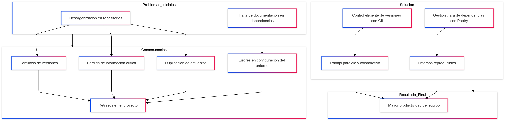
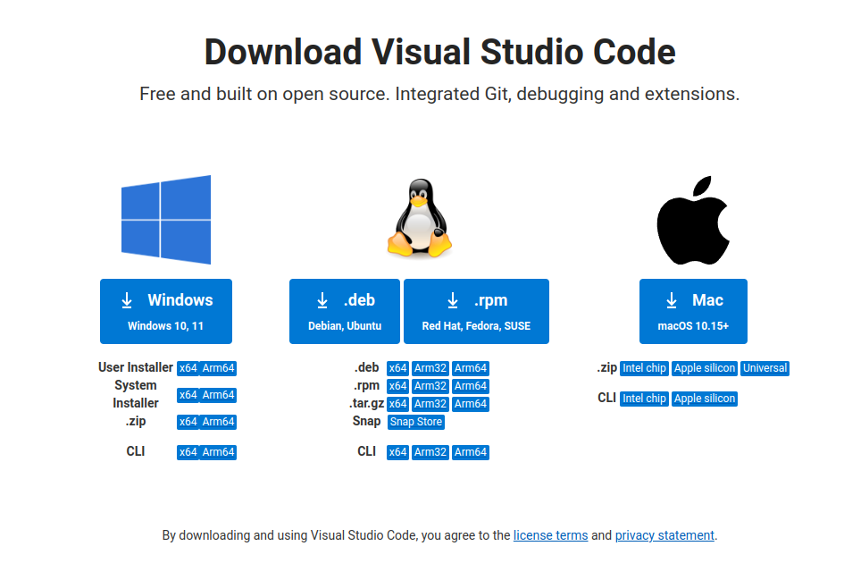
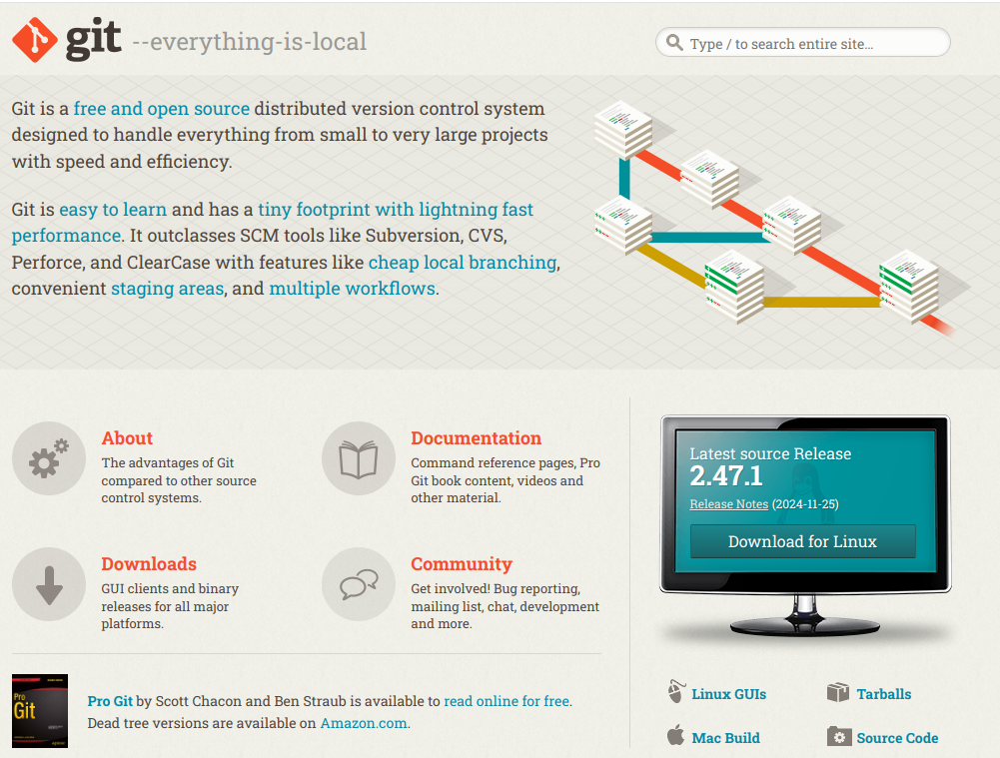
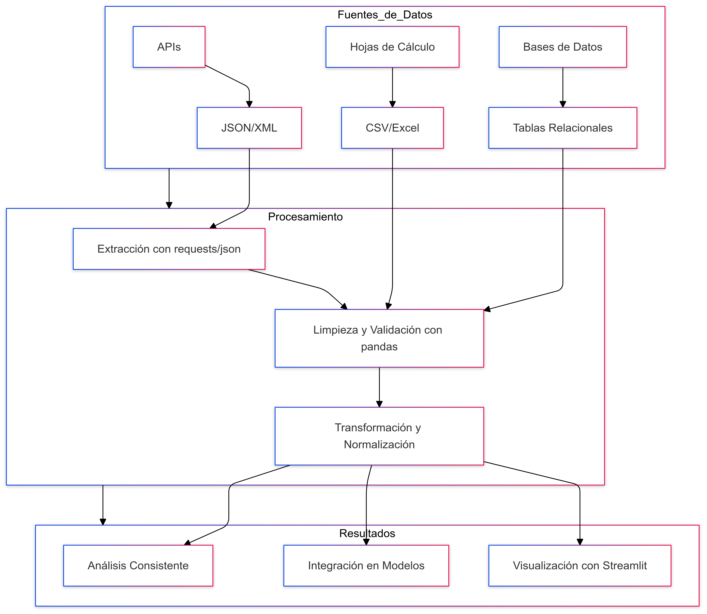

Instalación de Entorno (Dockerizado)
Guía paso a paso para preparar su entorno de desarrollo profesional usando contenedores. Esto garantiza que todos trabajemos con el mismo servidor de base de datos.
1. El Poder de los Contenedores
Utilizaremos **Docker** para virtualizar nuestro servidor de bases de datos. Esto elimina los problemas de instalación y configuración de SQL Server en diferentes sistemas operativos (Windows, Mac, Linux). Un contenedor asegura que la base de datos funcione exactamente igual para todos los participantes.

2. Herramientas de Software Esenciales
Instale y configure las siguientes herramientas. Nota: Ya no necesita instalar SQL Server directamente, ¡Docker lo hará por usted!
Docker Desktop

Es la aplicación esencial para gestionar contenedores. Asegúrese de que esté instalada y ejecutándose en su sistema. Visite la página oficial de Docker Desktop para instalarlo.
Verificación:
Abra su terminal y ejecute docker --version. Debe mostrar la versión instalada.
Visual Studio Code (y Python)

Nuestro editor de código principal. Instálelo desde la página oficial. Además, **instale Python 3.10** para el entorno local (Conda o instalador directo). Necesitará estas extensiones:
- Python: Soporte esencial para el desarrollo en Python.
- Docker: Para interactuar fácilmente con contenedores desde VS Code.
- GitLens: Para control de versiones avanzado.
Git

Para el control de versiones y clonar el repositorio del curso. Instálalo desde la página oficial de Git.
Azure Data Studio o SSMS (Opcional)
Para gestionar el servidor SQL dentro del contenedor con una interfaz gráfica. **Azure Data Studio** es la opción recomendada por ser ligera y multiplataforma. Instálelo desde la página de Microsoft.
3. Ejecución del Entorno con Docker: Paso a Paso
Estos pasos crean y ejecutan el servidor SQL y el entorno de Python de forma aislada y reproducible.
Paso 1: Clonar el Repositorio del Curso
Abre una terminal (PowerShell, Bash, o Git Bash) y clona el material del curso.
# Clona el repositorio
git clone https://github.com/SPMINE-2425/primer_repo_izainea.git
# Ingresa a la carpeta
cd primer_repo_izaineaPaso 2: Levantar el Contenedor de SQL Server
Ejecutamos el contenedor oficial de Microsoft SQL Server 2019/2022. Esto creará el servidor en el puerto 1433 de su máquina, listo para usar.
docker run -e "ACCEPT_EULA=Y" -e "SA_PASSWORD=MiPasswordFuerte123" \
-p 1433:1433 --name sqlserver_diplomado -d mcr.microsoft.com/mssql/server:2019-latest**Nota Importante:** La contraseña (`MiPasswordFuerte123`) es temporal y se usará en el Módulo 2. ¡Guárdela!
Paso 3: Crear el Entorno de Python con Poetry
Instalaremos las dependencias en su entorno Python local. Asegúrese de que su versión de Python sea 3.10.
# Si usa Conda/Miniconda:
# conda create -n diplomado_env python=3.10
# conda activate diplomado_env
# Instalar Poetry y dependencias
pip install poetry
poetry install
4. ¡Entorno Profesional Listo!
Con Docker y Python listos, su entorno profesional está preparado para el Big Data y el análisis de bases de datos. Los módulos 1 y 2 utilizarán estos componentes, siguiendo el siguiente flujo de trabajo.
